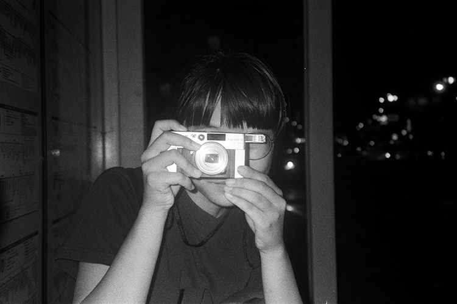

Konica C35
Konica於1968年推出第一台C35相機，此後陸續出產一系列C35共十多種版本。手上這台是1971年出產的C35早期版本Konica C35 flashmatic旁軸相機，搭載HEXANON 38mm f2.8 鏡頭，黃斑(疊影)手動對焦，沒有內建閃光燈(閃光燈可外接)，晴天拍起來很漂亮。機身小巧、輕便好攜帶，很適合生活隨拍
Nikon F65
Nikon F65於2001年出產，是很近代的電子快門單眼底片相機。出產時正值數位相機開始慢慢普及，Nikon F65功能已十分完備，機身面板方便操作好上手，內建的閃光燈柔順漂亮，是一台很適合入門的底片單眼
Pentax Espio 135M
Pentax Espio系列於1992年推出。Pentax Espio 135M是一台非常輕巧的傻瓜相機，自動對焦，只需要取景就可以立即拍攝，非常方便。搭配38-135mm變焦鏡頭，拍近拍遠都可以，支援日期打印、假寬景模式、自拍定時，巴掌大小卻功能齊全，非常好用

Canon Autoboy 120
Canon Autoboy 120於1999年出產，是一台輕便好用的傻瓜相機，使用38-120mm變焦鏡頭，內建彈出式閃光燈。拍照方便快速，體積小、好攜帶，具備日期打印功能，很適合記錄生活